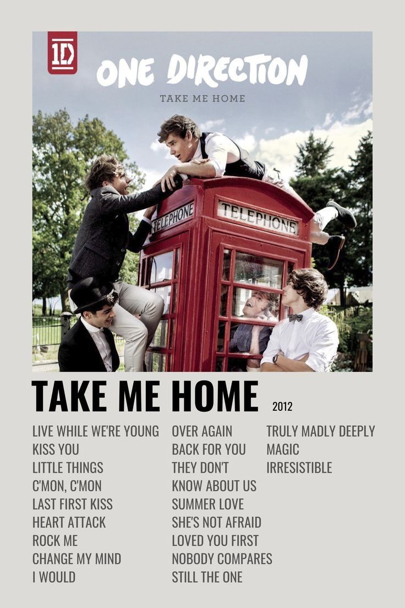
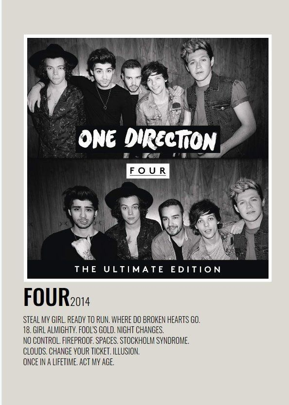

El primer álbum de estudio de One Direction, lanzado en 2011.

El segundo álbum de estudio de One Direction, lanzado en 2012.
El tercer álbum de estudio de One Direction, lanzado en 2013.

El cuarto álbum de estudio de One Direction, lanzado en 2014.
El quinto álbum de estudio de One Direction, lanzado en 2015.